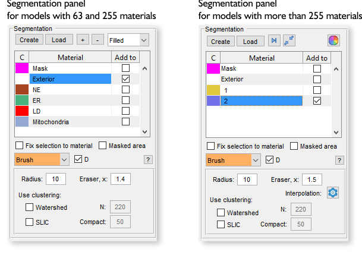
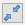
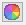
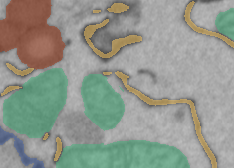
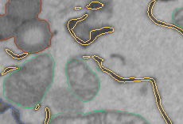
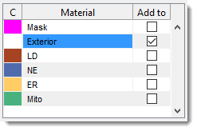
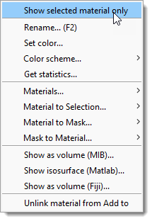

Segmentation Panel
Back to MIB | User interface | Panels
Overview
The segmentation panel is the main panel used for segmentation. It allows creating models, modifying materials, and selecting different segmentation tools.

What are the models
A model is a matrix with dimensions equal to those of the opened image dataset:
[1:imageHeight, 1:imageWidth, 1:imageThickness].
The model consists of materials, and each element of the model matrix (pixel) can belong only to a
single material (having indices: 1, 2, 3, etc) or to an exterior (with index 0).
Therefore, it is not possible to have
several materials overlapping above the same pixel of the image.
Each material in the model matrix is encoded with its own index.
Example of a model 4x4 pixels
In this example, the shown matrix represents a model with 2 materials encrypted with 1 (the upper left corner) and 2 (the lower right corner) for the image of 4x4 pixels. Index 0 encodes background (Exterior).Create button
{kind=link}
The button is used to start a new model. W hen clicked, the existing model layer will be removed.
Whenever possible, it is recommended to use models with 63 materials. If you need to work with materials exceeding 255, see this video:
For more information about different types of models, visit the Menu → Models → Convert type.
Load button
The button is used to load a model from disk. The following formats are accepted:
- MATLAB (
*.MAT): default and recommended format. - Amira Mesh binary (
*.AM): for models saved in Amira format. - Hierarchical Data Format (
*.H5): for data exchange with Ilastik. - Medical Research Council format (
*.MRC): for data exchange with IMOD. - NRRD format (
*.NRRD): for models saved in 3D Slicer format. - TIF format (
*.TIF). - Hierarchical Data Format with XML header (
*.XML). - All standard file formats when selecting
All files(*.*).
Alternatively, use Menu → Models → Load model or
drag-and-drop a *.model file to the Image View panel or the Segmentation table.
[+], [-], [>|], [Squeeze], [Recolor] buttons
These buttons are located in the Segmentation panel above the segmentation table and depending on the model type do different operations.
- add a new material to the model (only for models with 63 and 255 materials).
- delete the selected material(s) from the model (only for models with 63 and 255 materials).
- find and select the next empty index in the model (only for models with more than 255 materials).
-  squeeze the model—remove all empty indices and select the next available empty index (only for models with more than 255 materials).
-  regenerate colors of materials (only for models with more than 255 materials).
Filled/Contour dropdown
 
The dropdown modifies visualization of materials in the Image View panel:
- Filled: draw materials as filled shapes (faster, left image).
- Contour: draw only the contours of materials (slower, right image).
Segmentation table

The Segmentation table displays the list of materials in the model.
- C: shows colors for each material.
over the color box to open a color selection dialog. - Material: lists all model materials. Right-click (
) to open a context menu with additional options (see below). - Add to: defines the destination material for the Selection layer during Add (A) and Replace (R)
actions.
Linked to the selected material by default, but can be unlinked with or the context menus Unlink material from Add to.

- Show selected material only toggle to show only the selected material in the Image View panel.
- Rename (F2) rename the selected material, use F2 key shortcut.
- Set color change the color of the selected material.
- Color scheme update material colors using predefined palettes (more tools at Menu → File → Preferences → Colors). Random colors are generated if the model exceeds the palette. It is possible to swap colors or store/restore palettes.
- Get statistics calculate properties for objects of the selected material. See Menu → Models → Model/Mask statistics.
- Materials: direct operations available for materials of the model ( Materials menu demo)
List of available Material operations
- Rename material rename the selected material.
- Add material add a new material to the bottom of the list.
- Insert material insert a material at a specified position, shifting others.
- Swap materials swap positions of two materials.
- Reorder materials reorder materials with a new order.
- Export material export to MATLAB workspace or Imaris.
- Save material to file save the selected material to a file.
- Remove material remove selected material(s).
- Material to Selection: copy the selected materials to the Selection layer.
List of available operations
- NEW (2D, Slice) generate a new Selection layer from the selected material for the current slice.
- ADD (2D, Slice) add the selected material to the Selection layer for the current slice.
- REMOVE (2D, Slice) remove the selected material from the Selection layer for the current slice.
- NEW (3D, Stack) generate a new Selection layer for the current 3D stack.
- ADD (3D, Stack) add to the Selection layer for the current 3D stack.
- REMOVE (3D, Stack) remove from the Selection layer for the current 3D stack.
- NEW (4D, Dataset) generate a new Selection layer for the whole dataset.
- ADD (4D, Dataset) add to the Selection layer for the whole dataset.
- REMOVE (4D, Dataset) remove from the Selection layer for the whole dataset.
- Material to Mask copy the selected material to the Mask layer.
List of available operations
- NEW (2D, Slice) generate a new Mask layer from the selected material for the current slice.
- ADD (2D, Slice) add the selected material to the Mask layer for the current slice.
- REMOVE (2D, Slice) remove the selected material from the Mask layer for the current slice.
- NEW (3D, Stack) generate a new Mask layer from the selected material for the current 3D stack.
- ADD (3D, Stack) add the selected material to the Mask layer for the current 3D stack.
- REMOVE (3D, Stack) remove from the Mask layer the selected material for the current 3D stack.
- NEW (4D, Dataset) generate a new Mask layer from the selected material for the whole dataset.
- ADD (4D, Dataset) add the selected material to the Mask layer for the whole dataset.
- REMOVE (4D, Dataset) remove the selected material from the Mask layer for the whole dataset.
- Mask to Material copy the Mask layer to the selected material.
List of available operations
- NEW (2D, Slice) generate a new Material layer from the Mask layer for the current slice.
- ADD (2D, Slice) add the Mask layer to the Material layer for the current slice.
- REMOVE (2D, Slice) remove the Mask layer from the Material layer for the current slice.
- NEW (3D, Stack) generate a new Material layer from the Mask layer for the current 3D stack.
- ADD (3D, Stack) add to the Mask layer the Material layer for the current 3D stack.
- REMOVE (3D, Stack) remove the Mask layer from the Material layer for the current 3D stack.
- NEW (4D, Dataset) generate a new Material layer from the Mask layer for the whole dataset.
- ADD (4D, Dataset) add the Mask layer to the Material layer for the whole dataset.
- REMOVE (4D, Dataset) remove the Mask layer from the Material layer for the whole dataset.
- Show as volume (MIB) visualize the selected material using MIB 3D Viewer (MATLAB R2018b+).
- Show isosurface (MATLAB) visualize the model or selected material (if Show selected material only is checked) as an isosurface.
- Show as volume (Fiji) visualize using Fiji 3D viewer.
- Unlink material from Add to prevent the Add to column from changing with material selection.
- + : highlight the selected material in the Selection layer for the current slice.
- + : highlight for the whole dataset.
Info
Sensitive to
and .
See Shortcuts.
Select a combination of Mask and another layer
- Select the Mask entry in the table.
- Check .
- Select the second material in the Add to column.
- Press Ctrl+A or Alt+A.
- Drag-and-drop model files (e.g.,
*.model) from a file explorer to the Segmentation table to load as a new model. - Drag-and-drop annotation files (
*.ann) to open automatically.
Fix selection to material checkbox
The checkbox ensures segmentation tools apply only to the material selected in the table. This is useful for focusing segmentation on a specific material.
Masked area checkbox
The checkbox limits segmentation tools to masked areas of the image. This isolates specific regions for segmentation.
"D" checkbox (fast access tools)
The checkbox marks favorite selection tools for quick access with the key. Selected tools are highlighted with an orange background in the dropdown.
Specify two additional tools
- Shift+D - use this key shortcut to select the first predefined favorite tool
- Ctrl+D - use this key shortcut to select the second predefined favorite tool
These favorite tools can be specified from Menu → File → Preferences → Segmentation tools
Segmentation tools dropdown
The dropdown provides tools to separate and identify regions or objects within an image.
- 3D ball
- 3D lines
- Annotations
- Brush
- BW Thresholding
- Drag & Drop materials
- Lasso
- MagicWand-RegionGrowing
- Membrane ClickTracker
- Object Picker
- Segment-anything model
- Spot
Back to MIB | User interface | Panels